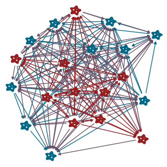
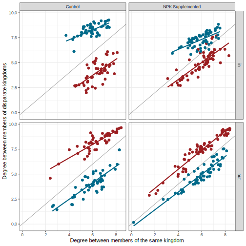
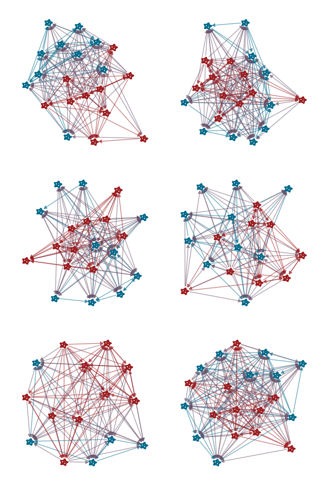
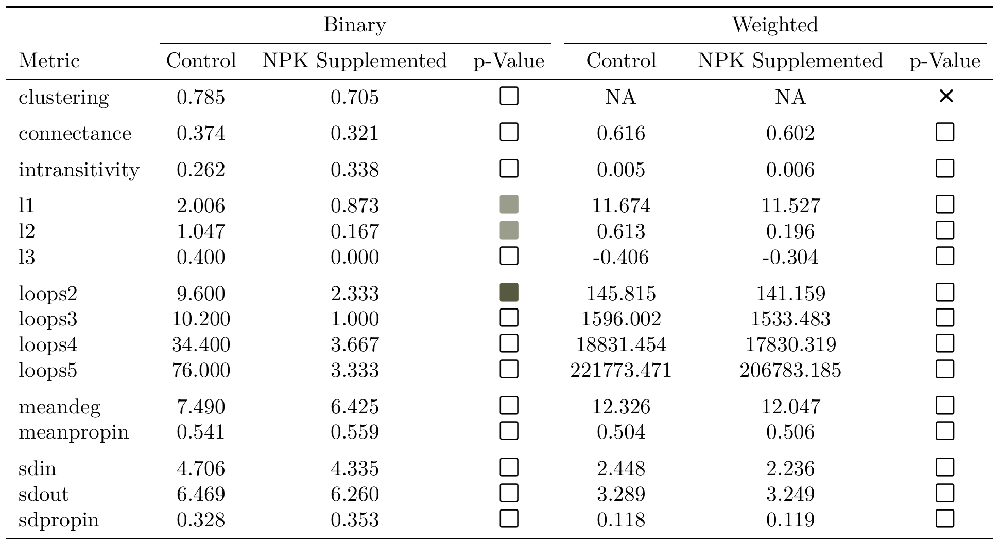

Matt Michalska-Smith
Lindsey Otto-Hanson, Georgiana May
Elizabeth Borer, Eric Seabloom
Linda Kinkel
- Experiment overview
- Network analysis
- Conclusions
Control
NPK+ Supplemented

Control
NPK Supplemented


- Experiment overview
- Network analysis
- Degree distributions
- Global structures
- Triads
- Conclusions

| Interaction Type | NPK Supplemented | Control | T-test p-value | KS-test p-value |
|---|---|---|---|---|
| Bacteria $\rightarrow$ Bacteria | $0.661$ | $0.659$ | $8.96e-01$ | 0.116 |
| Bacteria $\rightarrow$ Fungi | $0.494$ | $0.408$ | $2.13e-18$ | < 0.001 |
| Fungi $\rightarrow$ Bacteria | $0.731$ | $0.831$ | $9.81e-30$ | < 0.001 |
| Fungi $\rightarrow$ Fungi | $0.656$ | $0.724$ | $5.86e-09$ | < 0.001 |


| Treatment | Interaction Type | Formula | p-value | Adjusted $R^2$ |
|---|---|---|---|---|
| Control | Bacteria $\rightarrow$ Any | indegree ~ 19.252$ \cdot $outdegree - 0.508 | < 0.001 | 0.767 |
| Bacteria $\rightarrow$ Bacteria | indegree ~ 9.467$ \cdot $outdegree - 0.597 | < 0.001 | 0.743 | |
| Bacteria $\rightarrow$ Fungi | indegree ~ 10.072$ \cdot $outdegree - 0.449 | < 0.001 | 0.733 | |
| Fungi $\rightarrow$ Any | indegree ~ 19.996$ \cdot $outdegree - 0.649 | < 0.001 | 0.623 | |
| Fungi $\rightarrow$ Bacteria | indegree ~ 10.582$ \cdot $outdegree - 0.79 | < 0.001 | 0.511 | |
| Fungi $\rightarrow$ Fungi | indegree ~ 9.991$ \cdot $outdegree - 0.558 | < 0.001 | 0.643 | |
| NPK Supplemented | Bacteria $\rightarrow$ Any | indegree ~ 17.442$ \cdot $outdegree - 0.385 | < 0.001 | 0.546 |
| Bacteria $\rightarrow$ Bacteria | indegree ~ 8.765$ \cdot $outdegree - 0.474 | < 0.001 | 0.589 | |
| Bacteria $\rightarrow$ Fungi | indegree ~ 8.839$ \cdot $outdegree - 0.31 | < 0.001 | 0.369 | |
| Fungi $\rightarrow$ Any | indegree ~ 18.355$ \cdot $outdegree - 0.569 | < 0.001 | 0.673 | |
| Fungi $\rightarrow$ Bacteria | indegree ~ 8.676$ \cdot $outdegree - 0.512 | < 0.001 | 0.471 | |
| Fungi $\rightarrow$ Fungi | indegree ~ 9.546$ \cdot $outdegree - 0.617 | < 0.001 | 0.772 |
| Term | df | sum squared error | mean squared error | p-value |
|---|---|---|---|---|
| treatment | 1 | 3.989 | 3.989 | 0.419 |
| interaction_type | 3 | 150.053 | 50.018 | < 0.001 |
| treatment:interaction_type | 3 | 6.4 | 2.133 | 0.789 |
| Residuals | 432 | 2636.528 | 6.103 | |
| Adjusted $R^2$ | 0.04209 |

| Treatment | Direction | Formula | p-value | Adjusted $R^2$ |
|---|---|---|---|---|
| Control | in | between ~ 6.235$ \cdot $within - 0.013 | 0.960 | -0.010 |
| out | between ~ -0.199$ \cdot $within + 1.03 | < 0.001 | 0.306 | |
| NPK Supplemented | in | between ~ 1.725$ \cdot $within + 0.742 | < 0.001 | 0.238 |
| out | between ~ 0.683$ \cdot $within + 0.918 | < 0.001 | 0.542 |
| Term | df | sum squared error | mean squared error | p-value |
|---|---|---|---|---|
| treatment | 1 | 0.129 | 0.129 | 0.266 |
| direction | 1 | 0.005 | 0.005 | 0.833 |
| treatment:direction | 1 | 0.024 | 0.024 | 0.628 |
| Residuals | 436 | 45.332 | 0.104 | |
| Adjusted $R^2$ | -0.00338 |

Control
NPK Supplemented






- Experiment overview
- Network analysis
- Conclusions
- Weighted is better than binary
- Nutrient ammendments level the playing field